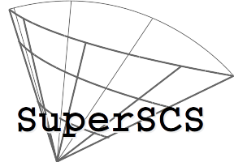
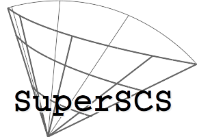

|  |
SuperSCS
1.3.2
|
|  |
SuperSCS
1.3.2
|
Before you proceed, make sure the following dependencies are installed:
libblas-devliblapack-devif you intend to use SuperSCS via its python interface, you also need to install
python-numpypython-scipyIn Linux run
First, you need to download SuperSCS from the github repo of SuperSCS, or use the command:
Installation runs as simple as
Once make finishes, the library files will be in out/.
If you want to run the tests, do
If, additionally, you want to run the tests and perform a memory check using valgrind, do
For more advanced options, type in your terminal
Docker is the simplest and most reliable way to install SuperSCS.
The engine of SuperSCS, the C library, can be installed using the image kulforbes/superscs.
Install it running:
If you haven't installed docker, do so by following this guide.
You may then run the docker image and access it using an interactive terminal by running
All that is necessary to run SuperSCS in C has been installed.
Compiling with SuperSCS is as simple as
To install SuperSCS in MATLAB, you need to build a MEX interface.
Do:
This should work. If not, please report an issue.
Necessary steps:
CVX 3.0 from herecvx/shims/cvx_scs.m and comment-out lines 165-175. Find the modified file here.cvx directorycvx_setupSuperSCS, we call cvx with cvx_solver scs and setting the parameter do_super_scs to 1.Here is an example of an LP problem
We have chosen the SuperSCS mode with \(\rho_x=1\), the restarted Broyden direction and memory equal to \(50\).
We have set the tolerance to \(10^{-8}\).
In case you encounter any problems, please report an issue.
cvx_precision is not supported (you have to use cvx_solver_settings('eps',...)).In order to install the SuperSCS module for Python, cd to python/ and run setup.py with the argument install:
You will then be able to import superscs into your Python code.
Further documentation for the Python module can be found here.
 1.8.6
1.8.6